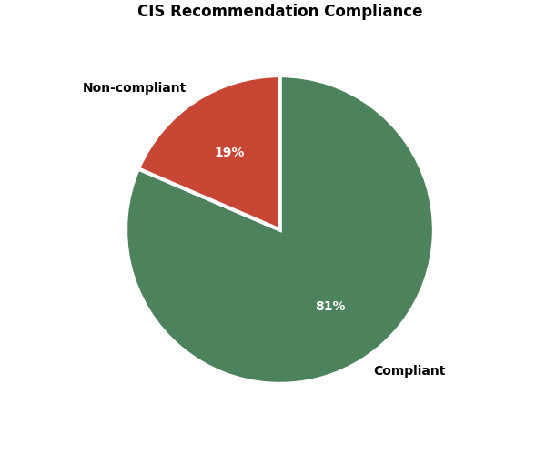
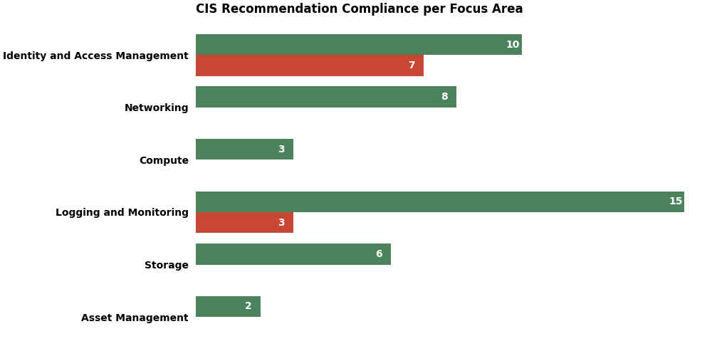

|  |  |
| Recommendation # | Compliant | Section | Details | ||||||||||||||||
|---|---|---|---|---|---|---|---|---|---|---|---|---|---|---|---|---|---|---|---|
| 1.4 | Yes 1 item |
Identity and Access Management |
| ||||||||||||||||
| 1.5 | Yes 1 item |
Identity and Access Management |
| ||||||||||||||||
| 1.7 | Yes 1 item |
Identity and Access Management |
| ||||||||||||||||
| 1.8 | Yes 1 item |
Identity and Access Management |
| ||||||||||||||||
| 1.9 | Yes | Identity and Access Management |
| ||||||||||||||||
| 1.10 | Yes | Identity and Access Management |
| ||||||||||||||||
| 1.11 | Yes | Identity and Access Management |
| ||||||||||||||||
| 1.13 | Yes 1 item |
Identity and Access Management |
| ||||||||||||||||
| 1.14 | Yes | Identity and Access Management |
| ||||||||||||||||
| 1.17 | Yes 1 item |
Identity and Access Management |
| ||||||||||||||||
| 2.1 | Yes | Networking |
| ||||||||||||||||
| 2.2 | Yes | Networking |
| ||||||||||||||||
| 2.3 | Yes | Networking |
| ||||||||||||||||
| 2.4 | Yes | Networking |
| ||||||||||||||||
| 2.5 | Yes | Networking |
| ||||||||||||||||
| 2.6 | Yes | Networking |
| ||||||||||||||||
| 2.7 | Yes | Networking |
| ||||||||||||||||
| 2.8 | Yes | Networking |
| ||||||||||||||||
| 3.1 | Yes | Compute |
| ||||||||||||||||
| 3.2 | Yes | Compute |
| ||||||||||||||||
| 3.3 | Yes | Compute |
| ||||||||||||||||
| 4.1 | Yes 2 items |
Logging and Monitoring |
| ||||||||||||||||
| 4.2 | Yes 1 item |
Logging and Monitoring |
| ||||||||||||||||
| 4.3 | Yes | Logging and Monitoring |
| ||||||||||||||||
| 4.4 | Yes | Logging and Monitoring |
| ||||||||||||||||
| 4.5 | Yes | Logging and Monitoring |
| ||||||||||||||||
| 4.6 | Yes | Logging and Monitoring |
| ||||||||||||||||
| 4.7 | Yes | Logging and Monitoring |
| ||||||||||||||||
| 4.8 | Yes | Logging and Monitoring |
| ||||||||||||||||
| 4.9 | Yes | Logging and Monitoring |
| ||||||||||||||||
| 4.10 | Yes | Logging and Monitoring |
| ||||||||||||||||
| 4.11 | Yes | Logging and Monitoring |
| ||||||||||||||||
| 4.12 | Yes | Logging and Monitoring |
| ||||||||||||||||
| 4.13 | Yes | Logging and Monitoring |
| ||||||||||||||||
| 4.16 | Yes | Logging and Monitoring |
| ||||||||||||||||
| 4.18 | Yes | Logging and Monitoring |
| ||||||||||||||||
| 5.1.1 | Yes | Storage - Object Storage |
| ||||||||||||||||
| 5.1.2 | Yes | Storage - Object Storage |
| ||||||||||||||||
| 5.1.3 | Yes | Storage - Object Storage |
| ||||||||||||||||
| 5.2.1 | Yes | Storage - Block Volumes |
| ||||||||||||||||
| 5.2.2 | Yes | Storage - Block Volumes |
| ||||||||||||||||
| 5.3.1 | Yes | Storage - File Storage Service |
| ||||||||||||||||
| 6.1 | Yes 13 items |
Asset Management |
| ||||||||||||||||
| 6.2 | Yes 14 items |
Asset Management |
| ||||||||||||||||
| Recommendation # | Compliant | Section | Details | ||||||||||||||||
|---|---|---|---|---|---|---|---|---|---|---|---|---|---|---|---|---|---|---|---|
| 1.1 | No 1 of 10 items |
Identity and Access Management |
| ||||||||||||||||
| 1.2 | No 1 of 10 items |
Identity and Access Management |
| ||||||||||||||||
| 1.3 | No 1 of 10 items |
Identity and Access Management |
| ||||||||||||||||
| 1.6 | No 1 of 1 item |
Identity and Access Management |
| ||||||||||||||||
| 1.12 | No 1 of 1 item |
Identity and Access Management |
| ||||||||||||||||
| 1.15 | No 1 of 10 items |
Identity and Access Management |
| ||||||||||||||||
| 1.16 | No 1 of 1 item |
Identity and Access Management |
| ||||||||||||||||
| 4.14 | No | Logging and Monitoring |
| ||||||||||||||||
| 4.15 | No | Logging and Monitoring |
| ||||||||||||||||
| 4.17 | No | Logging and Monitoring |
| ||||||||||||||||
To apply least-privilege security principle, one can create service-level administrators in corresponding groups and assigning specific users to each service-level administrative group in a tenancy. This limits administrative access in a tenancy.
It means service-level administrators can only manage resources of a specific service.
Example policies for global/tenant level service-administrators
Allow group VolumeAdmins to manage volume-family in tenancy Allow group ComputeAdmins to manage instance-family in tenancy Allow group NetworkAdmins to manage virtual-network-family in tenancyOrganizations have various ways of defining service-administrators. Some may prefer creating service administrators at a tenant level and some per department or per project or even per application environment (dev/test/production etc.). Either approach works so long as the policies are written to limit access given to the service-administrators.
Allow group NonProdComputeAdmins to manage instance-family in compartment dev Allow group ProdComputeAdmins to manage instance-family in compartment production Allow group A-Admins to manage instance-family in compartment Project-A Allow group A-Admins to manage volume-family in compartment Project-A
Creating service-level administrators helps in tightly controlling access to Oracle Cloud Infrastructure (OCI) services to implement the least-privileged security principle.
Refer to the policy syntax document and create new policies if the audit results indicate that the required policies are missing.
1 of 10 custom IAM policy that grants tenancy administrative access.
There is a built-in OCI IAM policy enabling the Administrators group to perform any action within a tenancy. In the OCI IAM console, this policy reads:
Allow group Administrators to manage all-resources in tenancy
Allow group any-other-group to manage all-resources in tenancy
Permission to manage all resources in a tenancy should be limited to a small number of users in the 'Administrators' group for break-glass situations and to set up users/groups/policies when a tenancy is created.
No group other than 'Administrators' in a tenancy should need access to all resources in a tenancy, as this violates the enforcement of the least privilege principle.
Remove any policy statement that allows any group other than Administrators or any service access to manage all resources in the tenancy.
Evaluate if tenancy-wide administrative access is needed for the identified policy and update it to be more restrictive.
1 of 10 custom IAM policy that grants tenancy administrative access.
Tenancy administrators can create more users, groups, and policies to provide other service administrators access to OCI resources.
For example, an IAM administrator will need to have access to manage
resources like compartments, users, groups, dynamic-groups, policies, identity-providers, tenancy tag-namespaces, tag-definitions in the tenancy.
The policy that gives IAM-Administrators or any other group full access to 'groups' resources should not allow access to the tenancy 'Administrators' group.
The policy statements would look like:
Allow group IAMAdmins to inspect users in tenancy Allow group IAMAdmins to use users in tenancy where target.group.name != 'Administrators' Allow group IAMAdmins to inspect groups in tenancy Allow group IAMAdmins to use groups in tenancy where target.group.name != 'Administrators'
These policy statements ensure that no other group can manage tenancy administrator users or the membership to the 'Administrators' group thereby gain or remove tenancy administrator access.
Verify the results to ensure that the policy statements that grant access to use or manage users or groups in the tenancy have a condition that excludes access to Administrators group or to users in the Administrators group.
Evaluate if tenancy-wide administrative access is needed for the identified policy and update it to be more restrictive.
1 of 10 custom IAM policy that grants tenancy administrative access.
IAM password policies can prevent the reuse of a given password by the same user. It is recommended the password policy prevent the reuse of passwords.
Enforcing password history ensures that passwords are not reused in for a certain period of time by the same user. If a user is not allowed to use last 24 passwords, that window of time is greater. This helps maintain the effectiveness of password security.
Update the number of remembered passwords in previous passwords remembered setting to 24 in the password policy.
Evaluate password reuse policies are inline with your organizational standard.
1 of 1 password policy/policies that do prevent reuse.
Tenancy administrator users have full access to the organization's OCI tenancy. API keys associated with user accounts are used for invoking the OCI APIs via custom programs or clients like CLI/SDKs. The clients are typically used for performing day-to-day operations and should never require full tenancy access. Service-level administrative users with API keys should be used instead.
For performing day-to-day operations tenancy administrator access is not needed. Service-level administrative users with API keys should be used to apply privileged security principle.
For each tenancy administrator user who has an API key,select API Keys from the menu and delete any associated keys from the API Keys table.
Evaluate if a user with API Keys requires Administrator access and use a least privilege approach.
1 of 1 users with Administrator access and API Keys.
To apply the separation of duties security principle, one can restrict service-level administrators from being able to delete resources they are managing. It means service-level administrators can only manage resources of a specific service but not delete resources for that specific service.
Example policies for global/tenant level for block volume service-administrators:
Allow group VolumeUsers to manage volumes in tenancy where request.permission!='VOLUME_DELETE' Allow group VolumeUsers to manage volume-backups in tenancy where request.permission!='VOLUME_BACKUP_DELETE'
Allow group FileUsers to manage file-systems in tenancy where request.permission!='FILE_SYSTEM_DELETE' Allow group FileUsers to manage mount-targets in tenancy where request.permission!='MOUNT_TARGET_DELETE' Allow group FileUsers to manage export-sets in tenancy where request.permission!='EXPORT_SET_DELETE'
Allow group BucketUsers to manage objects in tenancy where request.permission!='OBJECT_DELETE' Allow group BucketUsers to manage buckets in tenancy where request.permission!='BUCKET_DELETE'
Creating service-level administrators without the ability to delete the resource they are managing helps in tightly controlling access to Oracle Cloud Infrastructure (OCI) services by implementing the separation of duties security principle.
Add the appropriate where condition to any policy statement that allows the storage service-level to manage the storage service.
To apply a separation of duties security principle, it is recommended to restrict service-level administrators from being able to delete resources they are managing.
1 of 10 IAM Policies that give service administrator the ability to delete service resources.
OCI IAM Local users can access OCI resources using different credentials, such as passwords or API keys. It is recommended that credentials that have been unused for 45 days or more be deactivated or removed.
Disabling or removing unnecessary OCI IAM local users will reduce the window of opportunity for credentials associated with a compromised or abandoned account to be used.
Deactivating OCI IAM Local users and deleting of an OCI API Key will remove access to OCI
Deactivate OCI IAM Local users or delete of an OCI API Key will remove access to OCI
1 of 1 User(s) with credentials unused in 45 days
Cloud Guard detects misconfigured resources and insecure activity within a tenancy and provides security administrators with the visibility to resolve these issues. Upon detection, Cloud Guard can suggest, assist, or take corrective actions to mitigate these issues. Cloud Guard should be enabled in the root compartment of your tenancy with the default configuration, activity detectors and responders.
Cloud Guard provides an automated means to monitor a tenancy for resources that are configured in an insecure manner as well as risky network activity from these resources.
There is no performance impact when enabling the above described features, but additional IAM policies will be required.
Enable the cloud guard by selecting the services in the menu and provide appropriate reporting region and other configurations.
No Cloud Guard has not been configured in the root compartment of the tenancy.
Cloud Guard detects misconfigured resources and insecure activity within a tenancy and provides security administrators with the visibility to resolve these issues. Upon detection, Cloud Guard generates a Problem. It is recommended to setup an Event Rule and Notification that gets triggered when Oracle Cloud Guard Problems are created, dismissed or remediated. Event Rules are compartment scoped and will detect events in child compartments. It is recommended to create the Event rule at the root compartment level.
Cloud Guard provides an automated means to monitor a tenancy for resources that are configured in an insecure manner as well as risky network activity from these resources. Monitoring and alerting on Problems detected by Cloud Guard will help in identifying changes to the security posture.
There is no performance impact when enabling the above described features but depending on the amount of notifications sent per month there may be a cost associated.
Create a Rule Condition by selecting Cloud Guard in the Service Name Drop-down and selecting Detected – Problem, Remediated – Problem and Dismissed - Problem. In the Actions section select Notifications as Action Type and select the compartment and topic to be used.
No notifications have been configured for Cloud Guard Problems.
Object Storage write logs will log all write requests made to objects in a bucket.
Enabling an Object Storage write log, the 'requestAction' property would contain values of 'PUT', 'POST', or 'DELETE'. This will provide you more visibility into changes to objects in your buckets.
There is no performance impact when enabling the above described features, but will generate additional use of object storage that should be controlled via object lifecycle management.
By default, Object Storage logs are stored for 30 days in object storage. Users can specify a longer retention period.
To the relevant bucket enable log by providing Write Access Events from the Log Category. Beforehand create log group if required.
No object stores have no write level logging enabled.